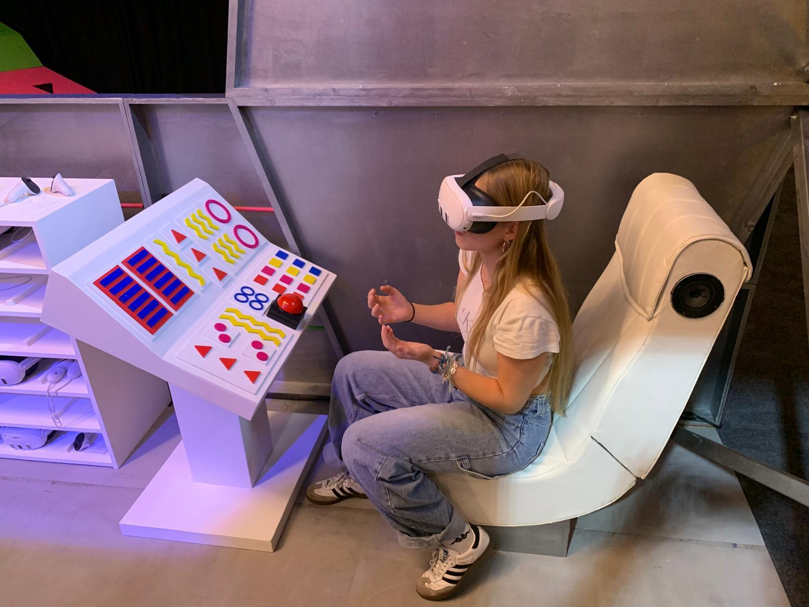
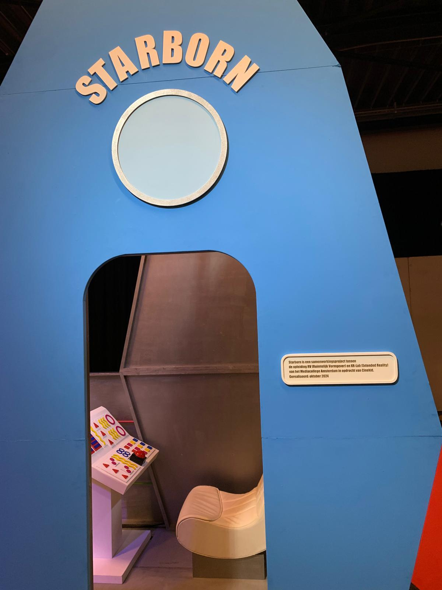
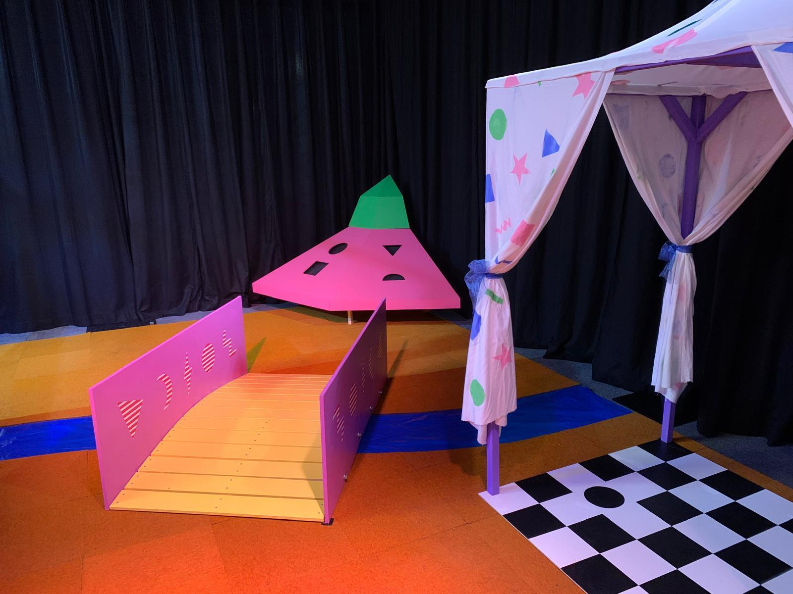

Cinekid Starborn
The Project
This project, *Starborn*, was developed in Unreal Engine using Blueprints for the Cinekid children's festival. It is an MR (Mixed Reality) experience featuring three interactive segments, each with an optional puzzle:
- Puzzle 1: Connect the wires to open a portal outside the spaceship.
- Puzzle 2: Restore a crashed UFO by placing the correct shapes back into it.
- Puzzle 3: Stand on specific tiles in a party tent to activate a celebration.
The game begins inside a rocket ship, where players embark on a journey to a different planet.
My Part
I worked primarily on Puzzle 2, ensuring the collision system for the UFO and the shapes functioned correctly. Additionally, I contributed to the wire physics and wire connection mechanics in Puzzle 1. Lastly, I helped recreate the UFO 3D model, converting a real-life version into a digital asset by calculating and adjusting its proportions for accurate representation in the game.
-

